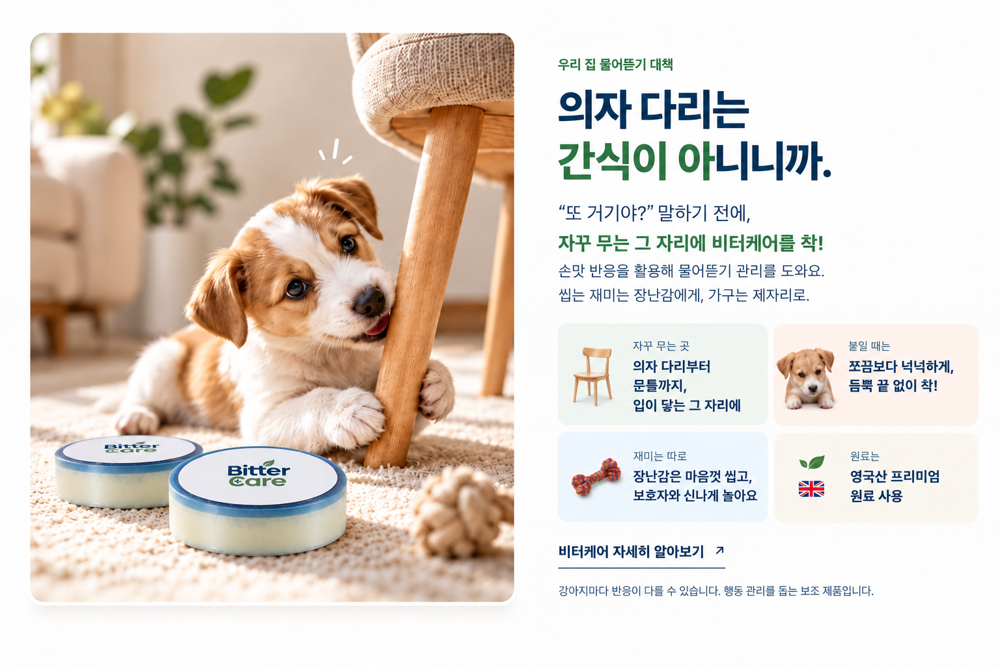
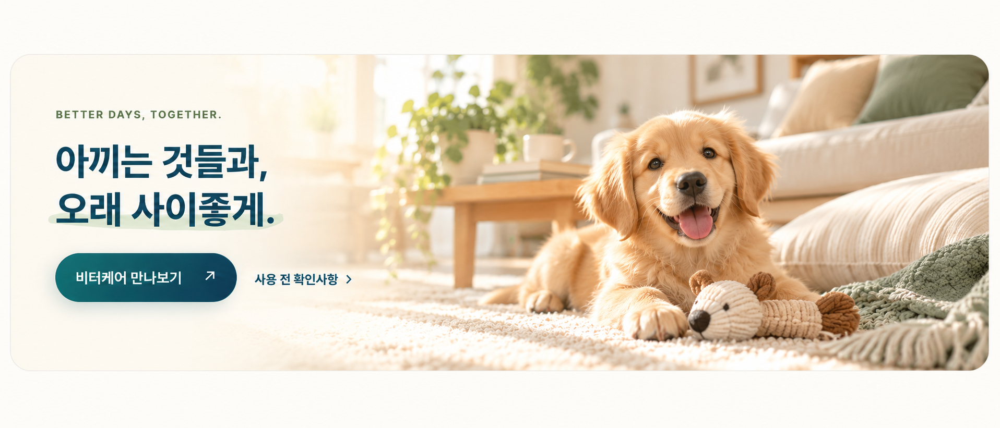

사랑하는 만큼,
바른 습관도 함께. ♡
강아지 물어뜯기,
오늘부터 그만.
가구는 가구답게, 강아지는 사랑스럽게.
물어뜯는 자리에 붙이는 쓴맛 스티커, 비터케어.
영국산 프리미엄 원료 사용

의자 다리는
간식이 아니니까.
“또 거기야?” 말하기 전에,
자꾸 무는 그 자리에 비터케어를 착!
쓴맛 반응으로 자꾸 무는 곳을 편안하게 관리해요.
씹고 싶은 마음은 장난감과 놀이로 자연스럽게 풀어주세요.
입이 닿는 그 자리에
들뜬 끝 없이 꾹!
보호자와 신나게 놀아요
강아지마다 반응이 다를 수 있습니다. 행동 관리를 돕는 보조 제품입니다.
성향 체크 무료
GET TO KNOW YOUR DOG
우리 집 장꾸,
알고 보면
이런 타입?
똑같이 물어뜯어도, 성향은 제각각.
우리 아이의 호기심과 에너지를 살펴보세요.
- 기질 알아보기
- 물어뜯기 성향
- 관리 방향 참고
- 무료로 시작
성향 체크는 무료 · 제품은 별도 구매
보호자의 관찰을 바탕으로 한 참고 정보이며 행동 진단은 아닙니다.
강아지 성향을 살펴보는 이 분석 방식은 특허 출원 기술을 바탕으로 구성했습니다.
붙이면 바로 안 물어뜯나요?
강아지마다 쓴맛에 대한 민감도와 습관이 달라 반응에 차이가 있어요. 실제로 입을 대는 위치와 밀착 상태를 먼저 확인하고, 처음에는 보호자가 반응을 지켜봐 주세요.
스티커 자체를 뜯으려고 해요.
끝부분이 들뜨지 않았는지, 부착 범위가 충분한지 확인해 주세요. 스티커를 물고 뜯는 행동이 계속되면 제거하고, 씹어도 되는 대체물을 제공해 주세요.
소파나 러그에도 붙일 수 있나요?
천·러그·거친 표면은 접착이 어렵거나 들뜰 수 있어요. 매끈한 가구나 문틀처럼 입이 닿는 곳에 사용하고, 민감한 소재는 작은 부위에 먼저 테스트해 주세요.
성향 체크도 제품을 사야 가능한가요?
제품 구매 전에도 무료 성향 분석 서비스를 이용할 수 있어요. 무료 제공 대상은 성향 분석이며, 비터케어 제품은 별도 구매입니다.

사용하다 막히는 순간에도, 함께할게요.
부착 위치부터 제품 문의까지. 상황을 남겨주시면 확인 후 이메일로 답변드리겠습니다.